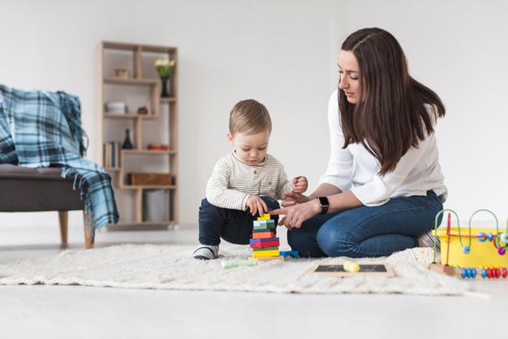

Anak Diet Gadget Dengan Jenga Block Tower!
By : Admin
Tanggal : 13-Maret-2020
Teknologi yang berkembang pesat berdampak besar besar bagi kita semua,
termasuk si kecil. Di zaman seperti ini si kecil merupakan generasi milenial yang melek dan
tanggap terhadap teknologi. Entah menggunakan gadget untuk belajar sampai dengan bermain game.
Namun bermain gadget juga dapat memberi dampak negatif untuk si kecil. Lantas apa yang harus dilakukan
Bunda untuk membuat si kecil tidak kecanduan gadget? Nah, ajak si kecil bermain Jenga Block Tower maka si
kecil akan lupa bermain gadget! Gak percaya? Yuk cari tau apa aja sih manfaat bermain Jenga, Bun!
Mengembangkan Imajinasi
Memainkan Jenga Block Tower atau biasa disebut dengan balok kayu memang dapat melatih kreativitas si kecil untuk membentuk
dan merangkai tumpukan balok menjadi suatu benda. Bunda dapat melatih imajinasi si kecil dengan sedikit memberi contoh
membentuk beberapa benda yang mudah untuk ditiru oleh si kecil, misalnya bangunan rumah, istana, maupun jembatan. Lama
kelamaan si kecil akan memiliki banyak referensi bentuk benda yang dapat dia gunakan saat bermain Jenga Block Tower.
Membuat imajinasi serta daya kembangnya mampu menciptakan sendiri ide yang ingin dia rangkai sesuai keinginannya.
Melatih Kesabaran
Bermain Jenga Block Tower memang harus sedikit sabar, karena jika tidak sabar maka bangunan yang dibangun akan roboh atau
hancur. Oleh karena itu terkadang si kecil akan kesulitan untuk mengontrol emosinya, Tak heran jika si kecil akan marah,
kesal, ataupun tantrum. Salah satu cara yang efektif untuk melatih kesabaran si kecil adalah dengan menemaninya dan membimbingnya.
Beri motivasi si kecil untuk bersabar dan semangat membangun ulang balok -balok tersebut ya, Bun.
Memecahkan Masalah
Untuk memberikan mainan kepada si kecil memang bukan perkara yang mudah. Karena bunda harus menyesuaikan dengan umur si
kecil agar si kecil tidak merasa kesulitan dalam memainkannya. Sebagai permulaan bunda dapat memilih permainan balok kayu
yang sederhana. Jika si kecil sudah mulai menguasainya maka bunda bisa memberikan permainan dengan level kesulitan yang berbeda.
Hal ini akan melatih kognitif si kecil dalam memecahkan masalah di permainan apapun yang sedang dia mainkan. Jenga Block Tower bisa
menjadi alternatif untuk si kecil lupa akan gadget mereka dan akan sibuk memikirkan strategi yang harus dilakukan agar memenangkan
permainan loh, Bun. Bermain Jenga Block Tower mampu meningkatkan quality time bersama keluarga loh Bunda. Maka coba luangkan waktu
setiap minggu untuk bermain bersama sambil mengobrol dengan si kecil. Nah saat bermain bersama si kecil jangan lupa siapkan juga
camilan, seperti Lapis Malang.